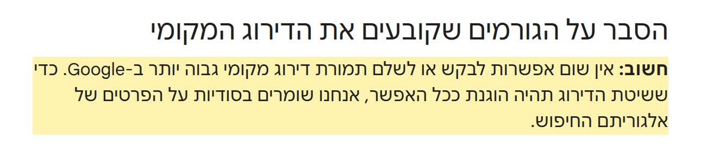
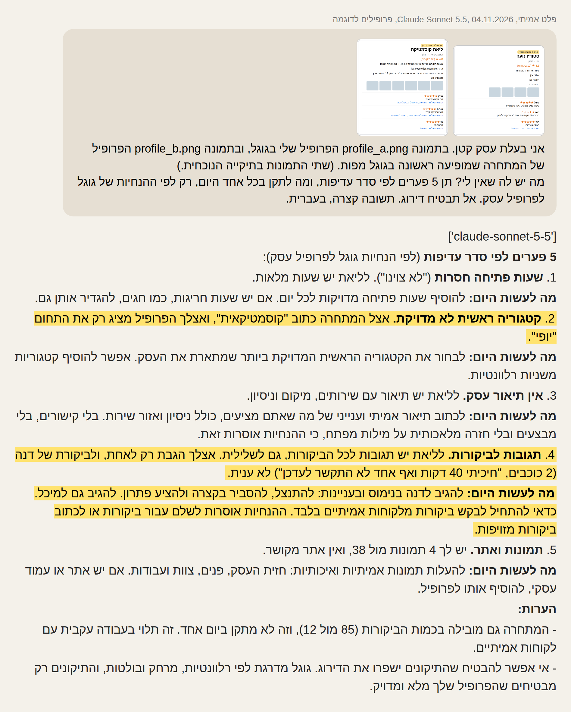
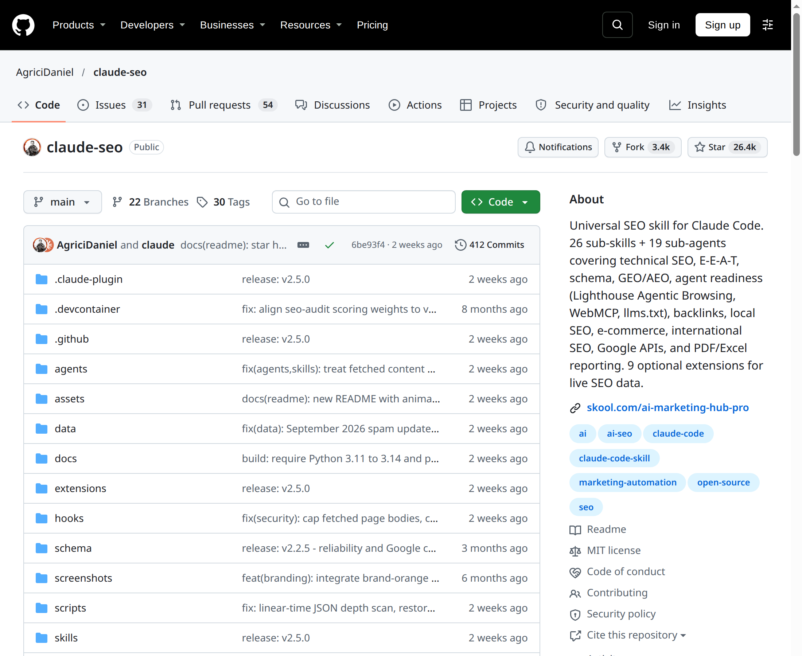

למה העסק ממול ראשון בגוגל מפות
הנה זה: הפרומפט מהריל, רשימת 10 בדיקות לפי דף העזרה של גוגל, והתשובה האמיתית של Claude על הדוגמה. עובד בגרסה החינמית של Claude, בלי להתקין כלום.
איך משתמשים
- מחפשים בגוגל מפות את מה שהלקוחות שלכם מחפשים (למשל ״קוסמטיקאית בחולון״), ומצלמים 2 עד 3 מסכים מהפרופיל של העסק הראשון: הכותרת, הפרטים והביקורות.
- מצלמים את אותם מסכים מהפרופיל שלכם.
- מעלים את כל התמונות ל-Claude (כפתור ה-+ בתיבת הצ׳אט), ומדביקים את הפרומפט.
הפרומפט
אני בעל/ת עסק קטן. מצורפים צילומי מסך של פרופיל העסק שלי בגוגל, ושל העסק שמופיע ראשון בגוגל מפות כשמחפשים ___ ב___. מה יש לו שאין לי? תן 5 פערים לפי סדר עדיפות, ומה לתקן בכל אחד היום, רק לפי ההנחיות של גוגל לפרופיל עסק. אל תבטיח דירוג. אל תמליץ על דברים שגוגל אוסר, כמו מילות מפתח בשם העסק או הטבה תמורת ביקורת.
10 בדיקות בפרופיל העסק
- העסק מאומת. גוגל כותב שעסק מאומת מקבל סיכוי גבוה יותר להופיע בתוצאות.
- קטגוריה ראשית מדויקת. ״קוסמטיקאית״ ולא רק ״יופי״. אפשר להוסיף קטגוריות משניות לשירותים שבאמת נותנים.
- שעות פתיחה, כולל שעות מיוחדות לחגים.
- כתובת, טלפון ואתר מלאים ונכונים.
- תמונות וסרטונים אמיתיים של המקום, העבודה והצוות.
- עונים לביקורות, גם לשליליות, בנימוס ולעניין.
- מבקשים ביקורות מלקוחות, עם הקישור או ה-QR מהפרופיל. בלי הנחה או מתנה בתמורה: גוגל אוסר את זה.
- שם העסק הוא השם האמיתי שלו, בלי מילות מפתח, עיר או סלוגן. אחרת יש סיכון להשעיה.
- תיאור עובדתי של השירותים, האזור והניסיון, בלי קישורים ומבצעים.
- פרטים נוספים שרלוונטיים ללקוחות, למשל חניה או Wi-Fi.
מה גוגל עצמו כותב
״אין שום אפשרות לבקש או לשלם תמורת דירוג מקומי גבוה יותר ב-Google.״ לפי גוגל, התוצאות המקומיות מבוססות בעיקר על התאמה לחיפוש, מרחק, ומידת המוכרות של העסק. (זה על התוצאות הרגילות. מודעות ממומנות הן משהו אחר.)

מה Claude ענה על הדוגמה מהריל
שני הפרופילים בדויים, הכנו אותם לדוגמה. הורץ ב-Claude Sonnet 5.5 ב-4.11.2026, עם אותו פרומפט. גם Opus מצא את פער הקטגוריה. Haiku מצא את הביקורת שלא נענתה, אבל לא את הקטגוריה. הניסוח אצלכם יהיה שונה.
['claude-sonnet-5-5']
**5 פערים לפי סדר עדיפות** (לפי הנחיות גוגל לפרופיל עסק):
1. **שעות פתיחה חסרות** ("לא צוינו"). לליאת יש שעות מלאות.
**מה לעשות היום:** להוסיף שעות פתיחה מדויקות לכל יום. אם יש שעות חריגות, כמו חגים, להגדיר אותן גם.
2. **קטגוריה ראשית לא מדויקת.** אצל המתחרה כתוב "קוסמטיקאית", ואצלך הפרופיל מציג רק את התחום "יופי".
**מה לעשות היום:** לבחור את הקטגוריה הראשית המדויקת ביותר שמתארת את העסק. אפשר להוסיף קטגוריות משניות רלוונטיות.
3. **אין תיאור עסק.** לליאת יש תיאור עם שירותים, מיקום וניסיון.
**מה לעשות היום:** לכתוב תיאור אמיתי וענייני של מה שאתם מציעים, כולל ניסיון ואזור שירות. בלי קישורים, בלי מבצעים ובלי חזרה מלאכותית על מילות מפתח, כי ההנחיות אוסרות זאת.
4. **תגובות לביקורות.** לליאת יש תגובות לכל הביקורות, גם לשלילית. אצלך הגבת רק לאחת, ולביקורת של דנה (2 כוכבים, "חיכיתי 40 דקות ואף אחד לא התקשר לעדכן") לא ענית.
**מה לעשות היום:** להגיב לדנה בנימוס ובעניינות: להתנצל, להסביר בקצרה ולהציע פתרון. להגיב גם למיכל. כדאי להתחיל לבקש ביקורות מלקוחות אמיתיים בלבד. ההנחיות אוסרות לשלם עבור ביקורות או לכתוב ביקורות מזויפות.
5. **תמונות ואתר.** יש לך 4 תמונות מול 38, ואין אתר מקושר.
**מה לעשות היום:** להעלות תמונות אמיתיות ואיכותיות: חזית העסק, פנים, צוות ועבודות. אם יש אתר או עמוד עסקי, להוסיף אותו לפרופיל.
**הערות:**
- המתחרה גם מובילה בכמות הביקורות (85 מול 12), וזה לא מתקן ביום אחד. זה תלוי בעבודה עקבית עם לקוחות אמיתיים.
- אי אפשר להבטיח שהתיקונים ישפרו את הדירוג. גוגל מדרגת לפי רלוונטיות, מרחק ובולטות, והתיקונים רק מבטיחים שהפרופיל שלך מלא ומדויק.

שלב 2, למי שרוצה ללכת רחוק יותר
claude-seo: כלי בקוד פתוח (רישיון MIT, כ-26 אלף כוכבים ב-GitHub) שבודק אתר ופרופיל עסק לעומק, כולל SEO מקומי. הוא חינמי, אבל רץ בתוך Claude Code, שדורש מנוי בתשלום וקצת היכרות עם מחשב. לעמוד של הכלי

🔒 לא צריך להעלות לצ׳אט סיסמאות או מסמכים אישיים. צילומי מסך של פרופילים ציבוריים מספיקים.
⚠️ זה לא ייעוץ שיווקי, ואין הבטחה שתעלו בדירוג. אלה צעדים שגוגל ממליץ עליהם. בודקים כל המלצה של Claude מול הפרופיל האמיתי שלכם.
כל יום כלי AI חדש שחוסך לכם כסף וזמן ← עקבו ב-@critifly